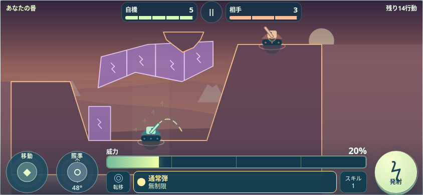

左で動き、
右でためる。
移動と照準を左側にまとめました。右の発射ボタンを長押ししたまま、左手で位置と角度を整えられます。
新しい操作、転移弾、壊せる地形。
100の戦場に、新しい一手を。
ARCLINE 0.7.0を公開しました。

移動と照準を左側にまとめました。右の発射ボタンを長押ししたまま、左手で位置と角度を整えられます。
4面から使える転移弾を追加。1行動で着弾した場所へ移動し、壁の側面に当たると、そのまま下へ落下します。
紫の遮蔽物を壊して、新しいルートを。山や崖、浮島、洞窟を組み合わせ、100面を再設計しました。
ほかにも。 通常敵の中心へ直撃すると1.5倍のクリティカル。武器の選択・残数表示やプレビューを整理し、高い弾道を追うカメラも更新しました。
スマホは横向きでプレイ。
同じブラウザの進行・所持データを引き継ぎます。